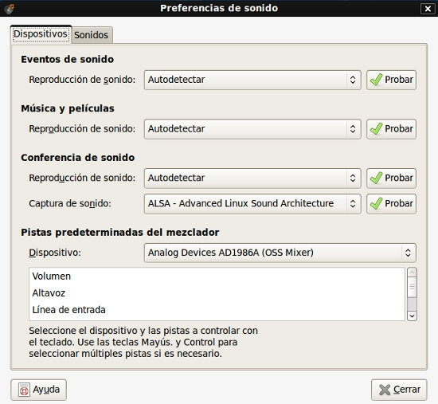

El sistema cuenta con un menú para poder controlar y ajustar el sonido del ordenador a tu gusto y según tus necesidades.
Para modificar algún aspecto relacionado con el sonido de tu máquina tienes que dirigirte con el ratón hacia el panel superior del escritorio y hacer clic en el menú Sistema→Preferencias→Sonido.
Se te abrirá una ventana que contiene tres pestañas:
Dispositivos: en esta ventana se resumen las acciones de tu ordenador que necesitan sonido para llevarse a cabo, por ejemplo, reproducir películas o escuchar música. En el recuadro Reproducción de sonido puedes elegir alternativas relacionadas con aspectos técnicos de tarjetas de sonido, servidores de sonido, etc…, pero te recomendamos que selecciones la opción Autodetectar, para que el sistema busque por ti la solución más recomendable. Las Pistas predeterminadas del mezclador se utilizan para controlar el volumen en las diferentes salidas de sonido, por ejemplo, los auriculares, el micrófono, el maestro, etc…

Sonidos: en esta ventana puedes asociar a tareas concretas que realices en tu ordenador un sonido específico, por ejemplo, que se escuche una sirena cuando el sistema te abra un mensaje de error, o un mensaje informativo, o cuando elijas una opción de un menú, etc… puedes seleccionar tanto la acción en sí como el sonido que quieres que se escuche.
Campana del sistema: hace referencia a ese icono con forma de altavoz que tienes en la parte derecha del panel superior de tu escritorio, junto a la parte de la fecha. Desde esta ventana puedes tener activado el icono para conservar el sonido en tu ordenador, o desactivar dicho icono cuando quieras que no se reproduzca ningún sonido.
Este icono con forma de altavoz también supone otra manera de gestionar y controlar el sonido.
Si haces clic encima del icono con el botón izquierdo del ratón puedes modificar el volumen del sonido, ponerlo más alto o más bajo, sólo tienes que mover el pequeño recuadro central arrastrándolo hacia la derecha o hacia la izquierda haciendo clic y sin soltar el ratón.
Si haces clic encima del icono con el botón derecho del ratón, entre otras tareas, puedes silenciar el volumen de manera que no suene nada, acceder al control del volumen para gestionar lo que hablábamos antes sobre las Pistas predeterminadas del mezclador, etc…
Si escuchas o ves escrita la palabra “Mute” asociada al sonido de un ordenador, no es más que el término que muchos utilizan para decir que ese ordenador está
en silencio, con el sonido totalmente bloqueado.
{kind=link}
{kind=link}
{kind=link}
{kind=link}
{kind=link}
{kind=link}